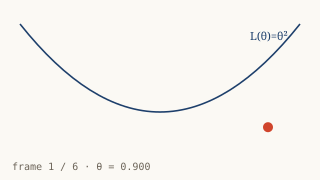

一条能跑的 train.py，以及一句判据 η < 2/k——但你还不知道 k 从哪来。
你能对着一个函数估出 k、算出余量、并说清"余量小了会发生什么"。
2/k 判过步长。这一节把那三个数摆在一张图上，让它们互相说话。先想：同一座山谷，为什么要两种看法
如果只能看一个数，你会看 k、看 η、还是看 2/k − η？为什么？
想好了再看（先自己写一句）
看余量。单独看 η 小不代表安全（k 大时照样炸），单独看 k 大也不代表会炸（η 够小就没事）——只有差才是"还剩多少余地"。
同一个山谷有两种读法：按"位置"读，看每一跳落在哪；按"余量"读，看每一步离发散线还有多远。两种读法说的是同一件事，但第二种能提前算出来。
横轴是 θ，纵轴是 L(θ)。每一跳画成一个点，连起来就是轨迹：点越靠谷底越好，来回跨就是震荡。这种读法直观，但要画出来才看得见。
只算一个数：2/k − η。大于 0 就收敛，越接近 0 收敛越慢，小于 0 就发散。这种读法不用画图，落地成代码就是一句判断。
把 k 改成 200：η 还是 0.1，余量立刻变成负的。这就是"换一层就炸"的算术版本。
η = 0.1、k = 2 时余量是 0.9（很安全）；k = 200 时余量是 −0.09（必炸）。同一个 0.1，安全与否完全取决于 k。
做：把轨迹一帧帧落到图上
拖动帧序列的进度条，第 6 帧的点会比第 1 帧更靠近谷底吗？还是更远？
想好了再看
更靠近。这组帧用的是 η = 0.1、乘数 0.8，每帧缩到上一帧的八成。

拖动进度条或用 ← →：点一帧一帧往谷底靠，每帧的距离都缩到上一帧的八成左右。
按 ← → 单帧步进，看第 4 帧到第 6 帧的变化越来越小——收敛就是这个样子的：变化量本身在缩小。
看：真实录制里，余量小是什么手感
这段录的是把 η 从 0.1 拖到 0.49 的全过程：前一半损失一路下降，后一半开始左右横跳但还没发散——余量接近 0 的样子。
损失曲线前半段单调下降；拖到 0.45 以上时开始出现"下降一点、弹回一点"的锯齿，但幅度不越来越大——那是余量还为正、只是很小。
练习：三个数，自己先算
前两题自动判分；第 3 题按自评记录，不计入分数。
1. L(θ) = 50θ²，η = 0.05，这一步（ ）
提示 1 · 先求 k
L = aθ² 的曲率是 2a。这里是 100。
提示 2 · 再看余量
2/100 − 0.05 = −0.03？还是 0.02 − 0.05？先把 2/k 算出来再减。
2. 设 L(θ) = θ²，当前 θ = 1，η = 0.3，走一步之后 θ = （填小数）
提示 · 只乘一次
θ 变成 θ × (1 − 2η)，η = 0.3 时乘数是 0.4。
3. 自评：你能指着一个函数说出它的 k 大约是多少、当前 η 还剩多少余量吗？
还没有交卷。
本节小结
- 安全与否看余量
2/k − η，不看单个数字。 - 余量接近 0 时损失开始锯齿，但幅度不扩大；余量为负才真发散。
概念索引
- 余量（margin）
来源与时效
- Boyd, S. & Vandenberghe, L. Convex Optimization, 2004, §9.3（收敛步长 ≤ 2/L）。